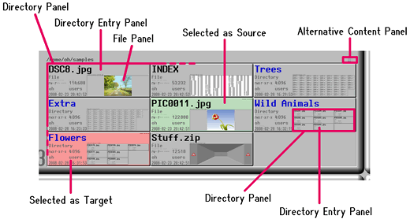

Eagle Mode -
emFileMan User Guide
Copyright © 2008 Oliver Hamann.
Homepage: http://eaglemode.sourceforge.net/
Contents
1 Introduction
2 Panel types
2.1 Directory entry panels
2.2 Directory panels
2.3 File panels
2.4 Control panel
3 Selection and commands
3.1 Quick intro A: deleting a file
3.2 Quick intro B: copying a file
3.3 Selection basics
3.4 Advanced selection
3.5 Commands
3.6 Default commands
4 Additional keyboard functions
4.1 Selecting
4.2 Executing a default command
4.3 Navigating by entering names
1 Introduction
emFileMan is the file manager in Eagle Mode. By zooming and scrolling, you can
browse the file system tree and see the contents of directories and files. With
the view settings you can change the order of directory listings and enable or
disable the showing of hidden entries. Finally, you can select files and
directories for executing commands on them. The default command set is rich and
has things like copy, delete, archive packing/unpacking, starting of
applications and many more. But the command set is highly customizable (see
emFileMan Customization for
more).
Technically, emFileMan is a plugin application that provides a user interface
for directories. The files are interfaced through other plugins, which are
started by emFileMan as you zoom into the files. Thereby, it all makes up an
integrated user interface.
The root directory of the file system is shown somewhere in the center of the
virtual cosmos. But when Eagle Mode is started, you are brought to your home
directory right away by default (this can be changed in the bookmarks).
2 Panel types
This chapter describes the different panel types in emFileMan. While reading,
keep an eye on this picture:

2.1 Directory entry panels
As the name says, a directory entry panel interfaces an entry of a directory.
Such an entry can be a file, a subdirectory, a device or another type. A
directory entry panel shows the name, the path and the attributes of the entry,
and it shows the content through an inner panel, which is called the content
panel in general. In particular, the content panel is either a directory panel
or a file panel, or it is an error message panel when the content cannot be
shown. The content panel is not shown if it were too small on the screen.
In addition to the normal content panel, there are alternative content panels
showing the content in a more general fashion. For files, the last alternative
is a hex dump. The first alternative content panel can be found on the right
side above the original content panel. Further alternatives are laid out in the
same way relative to each other.
Directory entry panels can be selected, but this is described in another
chapter.
For the question what's first - chicken or egg: There is one case of a directory
entry panel where the entry is actually not an entry of any directory: The root
of the file system, shown in the virtual cosmos.
2.2 Directory panels
A directory panel simply lists the entries of a directory. For each entry, it
shows a directory entry panel. The directory panel itself has no border.
2.3 File panels
A file panel shows the content of a file. It is created by an appropriate plugin
application. Some plugins even allow to modify the file (e.g. SilChess).
2.4 Control panel
The control panel of emFileMan is shown in the control view of Eagle Mode when
either a directory panel or a directory entry panel is focused. The control
panel has buttons and fields for the view settings, the selection, and the
commands. Please zoom into these components for reading descriptions and help
texts.
3 Selection and commands
For managing files and directories, you can select entries and execute commands.
3.1 Quick intro A: deleting a file
These are the steps for deleting a file:
- Navigate to the file you want to delete.
- Click with left mouse button on the directory entry panel of the file (it
gets red).
- Click on the Delete button in the control panel.
- A dialog pops up and asks whether you are sure to do the deletion. Click
OK if you are.
3.2 Quick intro B: copying a file
These are the steps for copying a file into a directory:
- Navigate to the file you want to copy.
- Click with left mouse button on the directory entry panel of the file (it
gets red).
- Navigate to the directory into which you want to copy the file.
- Click with left mouse button on the directory entry panel of the directory
(it gets red, and the previously red directory entry panel of the file gets
green).
- Click on the Copy button in the control panel.
- A dialog pops up and asks whether you are sure to do the copy. Click
OK if you are.
3.3 Selection basics
emFileMan has two selections: the source selection and the target selection. The
meaning of "source" and "target" depends on the command you execute. The source
selection is green, and the target selection is red. These colors are shown by
the background of the directory entry panels according to the selection of
entries.
To target-select an entry, simply click with the left mouse button on the
directory entry panel. Thereby, any previously target-selected entry
automatically gets source-selected.
There is no way to source-select directly. So if you want to source-select an
entry, you will have to target-select it first, and then you have to
target-select another entry for that the first gets source-selected.
Note: If you make a mistake in selecting a target and want to select another,
keep in mind that an already correct source-selection is changed by another
target-selecting. You may have to start from the beginning with selecting, or
you could make use of the button Swap Selections - it can be seen as a
kind of undo for such situations.
3.4 Advanced selection
It is possible to select multiple entries. For example, you could select
multiple files for copying them at once into a directory. Therefore, you would
have to target-select all the desired files first, and then you would have to
target-select the destination directory, so that all the previously
target-selected files get source-selected. Here is how to target-select multiple
entries:
To select a range of entries in a directory, click on the first entry as usual,
and then hold the Shift key while clicking on the last entry.
To select an entry in addition to one or more already selected entries (in any
directory), or to deselect an entry, hold the Ctrl key while clicking on that
entry.
Combinations are possible: To select an additional range, hold Ctrl while
clicking on the first, and Shift while clicking on the last. To invert a range,
hold Ctrl while clicking on the first, and Shift+Ctrl while clicking on the
last.
All that is about target selection. The source selection is never changed as
long as you hold the Shift or Ctrl key. And whenever you begin a new target
selection by clicking without holding Shift or Ctrl, the whole old target
selection gets the new source selection.
If you work with multiple Eagle Mode windows: The selection is common to all
windows (except the windows come from different processes, e.g. through
different users or hosts). So, for example, you could have one window for
selecting sources, and one for selecting targets. It does not play a role in
which window you execute a command. Only the view settings are per-window.
3.5 Commands
The commands are not described here in detail. Just zoom into the command
buttons: Mostly, there is a description of what they do and which selection
they require.
Some commands can be executed by entering hotkeys (even described in the
buttons). For these hotkeys to work, any directory entry panel or directory
panel must be focused, not the control panel.
3.6 Default commands
Some commands are configured as the default for certain file types or for
directories. Typically, these commands are starting a foreign application like
an editor or a viewer on the file. The default for directories is to open a
terminal with the directory taken as the current working directory.
To execute the default command for an entry, simply double-click with the left
mouse button on the directory entry panel. Thereby, the source selection is
cleared, the entry is target-selected, and the default command is executed.
If you want to change the configuration of default commands, please read
emFileMan Customization.
4 Additional keyboard functions
4.1 Selecting
For selecting a directory entry by keyboard, focus the corresponding panel and
press the Space key. Thereby, you can use the modifier keys Shift and Ctrl in
the same way as with selecting by mouse.
4.2 Executing a default command
For executing the default file manager command on a directory entry by keyboard,
focus the corresponding panel and press the Enter key.
4.3 Navigating by entering names
If you know the name of a directory entry which you want to visit, then you
could do the following:
First make sure to have the focus on any sister directory entry panel or on the
directory panel itself. Then type the first characters of the name quickly
without a break. On each character you type, the focus is set to the first entry
whose name matches the typed characters so far. It is letter-case-insensitive.
At the end you could press the Space key for selecting the found entry (without
that, it is sometimes hard to find the focused panel on the screen).